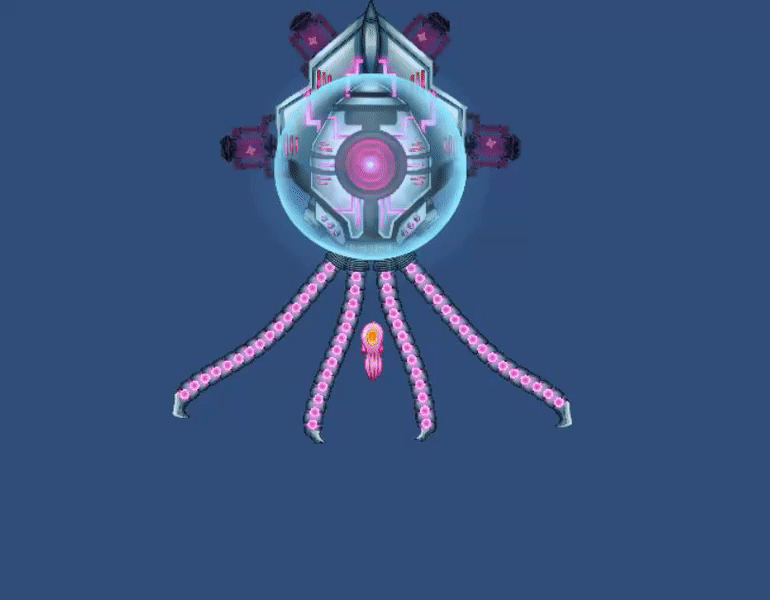
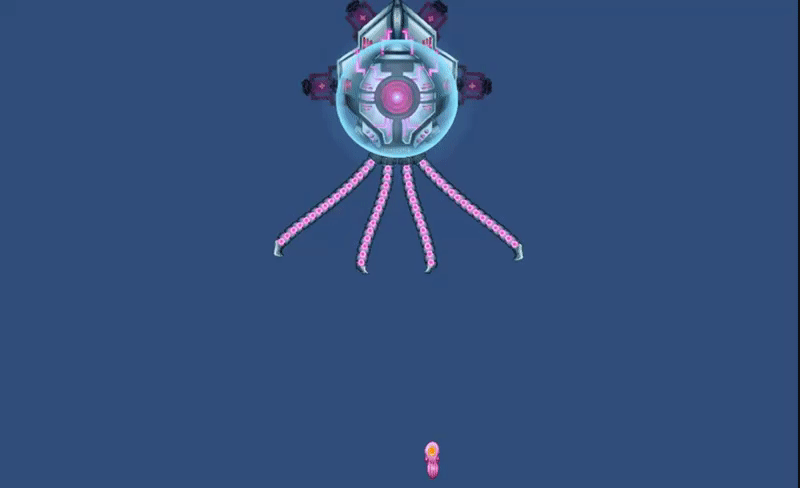
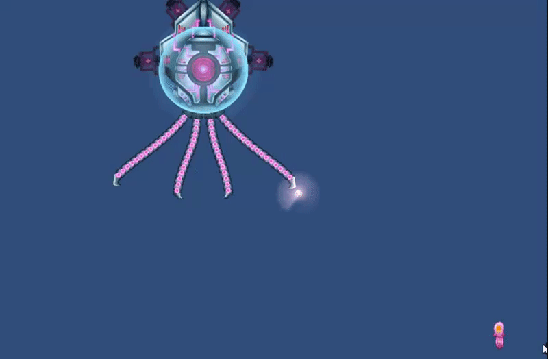

Back in early March, I implemented some new art assets, added in a tentacle attack, and added in two new types of attacks. The new attack types are lasers and bombs. The laser is mostly a copy of the player’s laser, with some adjustments. The bomb attack is currently just a sand dollar that is launched slowly at the player. This should be easy to improve upon later, once we have the correct bomb set up. With all of the new attacks, the boss is close to being a functional, playable fight, now that it has ways of hitting the player from all angles. There are still some aspects that need to be implemented, but it could enter testing during the next sprint.
The new tentacle attack I added is fairly simple. It reaches out with all of the tentacles, then swoops in, hopefully catching the player and pulling them in close. I might make this into the bite attack we have planned, so the boss pulls the player in for the bite. This was an attack we had planned for if the player got too close to the bottom of the boss, but that seemed like an unlikely scenario without a little assistance from the boss. With the pull in, it might be more likely.
The next addition was the boss laser. The majority of the code controlling the mechanics of the laser is borrowed from the player’s laser, with a few changes to support new systems. Instead of being run by input checked from within the script, the boss’s laser is told to fire from a separate script. The other script can change things like damage, speed, and size of the laser, and can even change the amount of prediction the lasers use. This last piece lets the boss have attack patterns such as one where it fires a burst of three lasers, one where it thinks the player will be, the next where the player will be if it speeds up, and one where the player will be if it stops.
The last couple attacks were mostly made using old systems. One is a giant laser that does more damage and moves faster, that only shoots when the player is far away. This is to deter players from staying far away for too long. This uses the same scripts that the burst laser uses, with different variables. The last attack added was the bomb launch. This sends a bomb towards the player, blowing up when the player enters within range. This is launched in the direction of the player with no prediction, meaning the player can easily avoid it by moving. It moves very slowly, so it occupies space for a while, preventing the player from moving freely. This same system will be used for a cluster bomb, which does more or less the same thing, with extra explosions for more fun.
At the moment, the lasers and mines don’t have a lot of visual feedback, only being noticeable by the projectiles sent flying towards the player. These attacks will likely have sound and visual effects to give the player a better understanding of what the boss is doing at a given time. An example of where this would happen is the big laser. It is delayed by a second from when the attack starts, but that delay is unnoticeable because there is no feedback during it. There will probably be some sort of charging effects, before the blast is released at the end. Each attack will likely have something like this to make sure the boss is readable at all times.
Thanks for reading! Connect with us on Twitter, Facebook, or YouTube. To make sure you stay up to date, sign up for our email list!